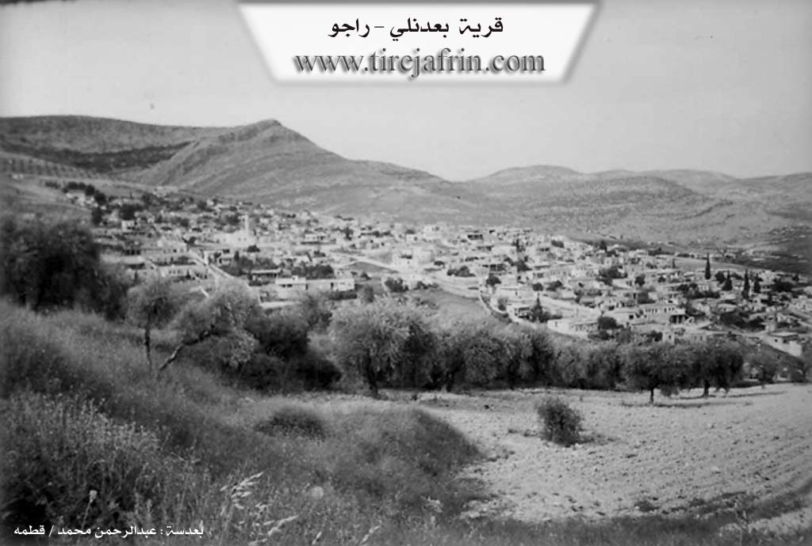
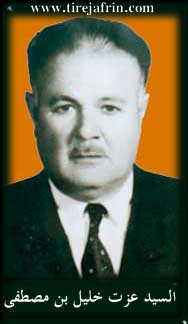
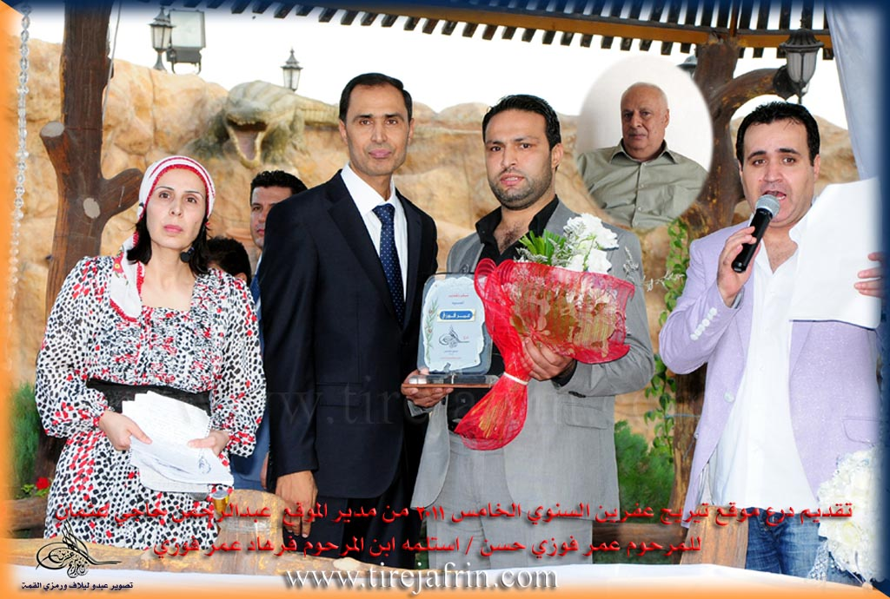

General Information
Nahiya (Subdistrict)
Reco
Also Known As
Ba'dina, Ba'dinlî, Ba'dîna, Ba'dîno, Ba'dînê, Baadina, Badina, Badino, Badîna, Badînli, Badîno, Ba‘dîna, Ba’dîna, Be'dina, Be'dîna, Be'dîno, Bedîna, Bedîno, Behdîna, Behdînya, Beit Adeen, Bidinlî, Sheikh Rashid, بعدنلي, بيت عدين, بعدينو
Tribes
Şêxan
Families, Clans, etc.
Alê, Bavê-wan Nayî, Biniyanê gundî Dolgirê, Ehmedê Zekî, Elî Bekrî Elî, Elîfo, Eslan, Ezazê, Hemqofel, Hemzê, Hentêmbat, Hêvîdî, Mala Dumisa, Mala Hacîler, Mala Hecî, Mala Kurd Ehmed, Mala Sunturler, Mala di Colxolê, Malê Sîno, Mislim, Reşîd, Seydko, Sîno, Uskikler, Xelkê Hikmet, Xilofet, Xwedêdo, Çerçîler

Photos



Basic Information about Be'dîna
Source: Ax û Welat
Etymology: Named after the Bahdînan region in Başûrê Kurdistanê
Foundation Date/Period: 400 to 500 years ago
Springs: Eynê Bêlek
Hills: Çayê Piling, Sirtê Bilbilê
Shrines: Şêx Reşîd
Wells: Bîra Piling, Hafar
Other Landmarks: Çayê Dimîlo, Benê Keloşkê, Kinhaftarê, Golê, Biniya Mala
Source: Afrin 366
Shrines: Şêx Reşîd
Ruins: Xarobê Simaq
Other Landmarks: Sorkê, Geliyê Sorsînê
Source: Khalil Sino
Springs: Ava Reş, Kanîka nava Xosar
Hills: Kelawîrî
Other Landmarks: Batman, Şêxanî
Summaries
I. Summary from TirejAfrin Site (English) of Be'dîna
According to the book 'جبل الكرد' 'Mountain of the Kurds (Afrin)' Geographical Study:
1 - PhD/Villages/Be'dîna, بعدنلي, بيت عدين /5246n - 906ha - 10km - 530m/:
- Be'dina (بعدينا): It is believed that its origin is from the word "Behdînan" (بهدينان), which is the name of a well-known region in southern Kurdistan. There is no connection between the Arabized name "Beit Adeen" (بيت عدين) and the Kurdish designation.
- One of the large villages in the region, it has a municipality and health center. It is located on the southern slope of Mount Pilingî (Çiyayê Piling (جبل بلنك)). The Aleppo-Meydan Ekbes (حلب - ميدان أكبس) railway line passes 2km from its eastern side when entering Nashab Valley (وادي النشاب). A weekly market has been held there every Tuesday since 2008.
According to the book Afrin... Her River and Green Hills:
بعدنلي: A village in Mountain of the Kurds (جبل الكرد) belonging to Rajo District (ناحية راجو), Afrin (منطقة عفرين), Aleppo Governorate (محافظة حلب).
It is a large village located on the southern slope of the middle part of Mountain of the Kurds (الجبل المذكور). It is bounded to the north by a high and rugged mountain chain and Darwish Oba Si village (قرية درويش أوبه سي), to the south by a valley and plain planted with olive and grape trees and Kurkan Tahtani (كوركان تحتاني), Kurkan Foqani (كوركان فوقاني), and Sari Oshaghi (صاري أوشاغي) villages, to the west by a rugged mountain chain and Dombllali village (قرية دومبللي), and to the east by a valley and plain and the railway line and nearby Hamshalk village (قرية حمشلك).
The number of its houses reaches about 800 houses and its age is about 500 years. Its old dwellings are stone and clay with flat wooden roofs, while the modern ones are stone and concrete that spread east, south, and west. The village is divided into three sections: the western section is located on a highland, the middle section in a plain, and the eastern section is located on a graduated mountain slope.
It has an electricity network and drinking water from artesian wells or from cisterns dug in houses that store winter rainwater. It has elementary and preparatory schools, a telephone center, agricultural center, and a mosque in the village center with several commercial and service shops that connect with the district and region by two paved roads.
The residents work in cultivating olives, grains, grapes, and fruit trees, as well as raising sheep and goats. The village is considered one of the beautiful villages in terms of its excellent location and modern construction, and there are several luxurious villas in the village, especially in the western and southern areas. A modern municipality was recently established there.
Among the holders of higher degrees in the village: Khalil Sabri Ahmed (خليل صبري أحمد) / Doctorate in Ophthalmology / Russia - Mustafa Hanan (مصطفى حنان) / Doctorate in Agriculture / Bulgaria - Yasser Hanan (ياسر حنان) / Doctorate in Aviation / Russia.
Among the families present in the village: Al Kor Ahmed family (آل كور أحمد) (Mistkah, Bari, Hastob, Habo, Mahmah Jah, Bako...) - Al Suntar (آل سونتر) - Al Alif (آل عليف) - Al Al Haji (آل آل حجي) - Al Jarji (آل جرجي) - Al Jalkhar (آل جلخر)...
Among the social figures in the village is Mr. Khalil Ezzat Ibn Ezzat (السيد خليل عزت ابن عزت).
It is mentioned that the late Fawzi Aref (فوزي عارف), owner of Middle East recordings, was from the sons of this village.
Village mayor:
II. Summary of Be'dîna from Ax û Welat
Source: https://www.youtube.com/watch?v=QJsANwsbZ84
The village of Bahdîna, located in the Mabata district of the Efrîn canton, traces its origins back four to five centuries. The village name is derived from Bahdînan, a region in Başûrê Kurdistanê, indicating the geographical origin of its founders. According to local oral history, the original settlers belonged to the Şêxan tribe. They migrated from Bahdînan and settled on a high ground known as Çayê Piling, attracted by the presence of caves and water sources. Over time, the settlement expanded to include approximately 650 households, with the village divided into six distinct neighborhoods such as Sirtê Bilbilê, Eynê Bêlek, and Hafar.
The social structure of Bahdîna is defined by several long standing families. While the village is comprised of the Şêxan tribe, specific lineage groups include Mala Kurd Ehmed, Mala Dumisa (formerly known as Hemqofel), Mala Sunturler, and Mala Hacîler. Other notable families mentioned include Mala di Colxolê, Uskikler, Çerçîler, Elîfo, Seydko, and Hêvîdî. A significant later addition was the Bavê-wan Nayî family, noted for their contributions to the village infrastructure, specifically bringing water approval in the 1950s.
The spiritual life of Bahdîna centers around the figure of Şêx Reşîd, originally named Îbrahîm Xelîl. He was a revered religious scholar who studied in France before returning to the region. His tomb has become a shrine (ziyaret) where people from across the region come to make vows and seek blessings. Locals recount miraculous stories about him, attributing supernatural powers to his faith. In one account, Şêx Reşîd stopped a train simply by raising his hand when the conductor refused to let him board. In another, he is said to have protected a cave full of people during a terrifying storm that brought down three hundred lightning strikes and a deluge of water; despite the flood, those inside remained dry due to his prayers.
Culturally and economically, Bahdîna is distinct within the Efrîn region. It was an early center for education, with a school opening in 1936 where Emîn Hafiz, who later became President of Syria, once taught. The village is famous for the production of suncix, a traditional sweet made from grape molasses, wheat starch, and walnuts. This labor intensive process involves dipping strings of walnuts into the boiling mixture up to twenty times. The village also dominates the regional trade in batteries and flashlights, with residents distributing these goods as far as Hema, Hums, and Laziqiyê. Additionally, the village is renowned for a specific culinary dish called Danik, a meal made with bulgur, onions, peppers, and tomatoes, which locals claim is tastier than meat. The history of daily life in Bahdîna has been meticulously chronicled by a local teacher, Mihemed Hesenîk, who filled thirty four notebooks recording every birth, death, wedding, and event in the village over several decades.
II. Summary of Be'dîna from Afrin Flo
The documentary footage focuses on the daily life and community activities of the youth in the village of Baedîna (also referred to as Badîna), located in the Efrîn region. Unlike historical accounts that rely on the testimony of elders to establish lineage or origins, this record highlights the current generation of residents during the summer season. The narrative is driven by the interactions between a host and a large group of local school-aged children, offering a snapshot of the village's demographics and social cohesion through play and communal service.
The social structure of the village is represented by the cohort of children interviewed, ranging from first to seventh grade. The host speaks with numerous boys, including Mihemed, who serves as the goalkeeper during their soccer match, as well as Mehmê Elî, Zênel, Hisên, Eyho, Ehme, N. Şêxo, Ehmed Ibrahîm, Ciwan, Reşîd, and Yûsif. While specific family names or tribal affiliations are not explicitly detailed, the diversity of the group suggests a robust youth population in Baedîna. One student, Ferhad, notes that he comes from Tirkiya (Turkey), which sparks a brief comment on his language skills, hinting at the cross-border movement and connections typical of families in this region.
A significant portion of the documentation centers on the maintenance of the village's primary sacred site, referred to simply as the tirba (cemetery/graves). Following their soccer game, the group mobilizes to clean the cemetery grounds. The participants, including older youths like Ehmed Ibrahîm and Mehmê Elî, work to remove dry grass and cardboard to prevent fires and maintain the dignity of the site. This collective action highlights the village's emphasis on respect for ancestors and communal responsibility. The speakers emphasize that "cleanliness comes from belief," reinforcing the spiritual and social importance of maintaining the tirba of Baedîna.
The documentary concludes by contextualizing Baedîna within the wider geography of Efrîn through a song. The lyrics praise the region's natural abundance, specifically mentioning the Çemê Efrîn (Afrin River) and the agricultural richness of the land, characterized by pomegranates, vineyards, and olive trees. While no specific historical landmarks such as castles or named springs are identified within the village itself during this recording, the footage serves as a testament to the living culture of Baedîna, defined by its energetic youth and their dedication to preserving the resting places of previous generations.
II. Summary of Be'dîna from Afrin 366
Source: https://www.youtube.com/watch?v=5MO7yBnFg10
The documentary centers on the village of Ba'dîna and the surrounding localities in the Afrin region, specifically highlighting the area's agricultural richness and social fabric. The narrative begins at the market in Raco before moving to a lush locality known as Sorkê. This area is celebrated for its abundant water and fertile vegetable gardens (bîstên), which produce eggplant and peppers. In Sorkê, the host encounters the Malê Sîno, a prominent local family described as the primary residents of that specific area.
The primary focus of the visit is the village of Ba'dîna, which the host identifies as his own home. He describes the village as large and beautiful, noting the historical depth of its population. specifically pointing out the Xelkê Hikmet (the people/family of Hikmet), characterizing them and the village foundations as "pir qedîm" (very ancient). The geography of the surrounding area is defined by the Geliyê Sorsînê (Sorsînê Valley) and a small nearby settlement called Xarobê Simaq, which consists of only eight households.
A significant portion of the transcript documents a religious pilgrimage to the local shrine of Şêx Reşîd. The host, accompanied by his mother Um Semîr, brings a sacrificial sheep to the shrine to perform a qurban. This offering is dedicated to the well-being and future success of three children: Salar, Bilind, and Birahîm. Prayers are offered for their health, education, and protection from misfortune.
The transcript also includes a personal account of a near-disastrous accident at the host's home. He details an event where a tractor carrying a water tank lost control and overturned near the house walls where children were playing. The host attributes the family's survival and the safety of the children to divine protection, reinforcing the community's reliance on faith and the significance of their visit to the shrine of Şêx Reşîd. Notable local figures mentioned include Xolê Ehmed, who runs a well-known sandwich shop in Ba'dîna utilizing local ingredients.
II. Summary of Be'dîna from Afrin 366 2
Source: https://www.youtube.com/watch?v=KxwVuwOpIt4
The documentary focuses on the village of Behdîna, also referred to by the speaker as Ba'drê, located in the Afrin region. The narrative centers on the distribution of charity during the Erefat (Eid) holiday, providing a glimpse into the village's spiritual focal point and its social dynamics.
The historical identity of Behdîna is deeply connected to a religious figure named Şêx Reşîd. He is described in the transcript as the "bunyadê gundê Ba'drê" (the founder of the Ba'drê village). His influence persists through his shrine, Tirba Şêx Reşîd, which serves as a significant pilgrimage site for the locals. Residents express a personal connection to the Sheikh; one woman notes that she and her family are neighbors to the shrine and recounts a story of Şêx Reşîd placing his hand on her mother, attributing a spiritual guardianship to him.
The social life of the village during the holiday revolves around a busy market area where people gather from Behdîna and surrounding locations, such as Dêmîlo and Dûr. The transcript highlights specific local characters who define the village's community atmosphere. Notable among them is Idrîs, a man locally nicknamed Agop. He holds the role of Heffar el-qubûr (gravedigger) and is respected for providing this service as a form of charity for the community, reportedly serving a wide area. Another prominent figure is Ebû Xelîl, who owns a shop near the mosque where young men gather.
The village maintains traditional spiritual practices centered on the shrine of Şêx Reşîd. An elderly woman at the site performs a specific ritual known as sîngê dikute (pounding the peg/stake). She explains that she hammers a stake into the ground as a form of prayer for those seeking help, specifically for people who cannot conceive children, those suffering from illness, or those seeking sustenance. This practice highlights the village's reputation as a place where locals seek divine intervention for health and fertility through traditional intercession at the founder's tomb.
II. Summary of Be'dîna from Afrin 366 3
Source: https://www.youtube.com/watch?v=CDF2TMqXJvo
The transcript documents a journey through the rural landscape of Afrin, centering on the speaker's home village of Badîno. The narrative highlights the close geographic proximity of numerous villages in this region. As the camera pans across the horizon, the speaker identifies neighboring settlements including Dêmîlo, Qideyê, Xwîtê, Kêl, Sêwiyan, Şeytana, Sorya, Haba, and Xezane. The area is defined by a mix of agricultural land and natural features, with specific trees serving as landmarks, such as Darê Badîno and Darê Dêmîlo.
A significant portion of the account focuses on a high ridge or area known as Reşê Karko. This location holds historical social importance for the locals. The speaker explains that before modern cellular networks were established in the region, villagers would climb to Reşê Karko to catch a signal from Turkey in order to call relatives living in Europe. The area around this ridge is divided into Karka jêr and Karka jor, meaning Lower and Upper Karko. Near these heights, the speaker points out specific local infrastructure, including Mekteba Dêmîlo and Maktaba Karko, which serve as schools or former school sites.
The group travels along a path identified as Rîka Meamelê, eventually stopping at a valley called Geliyê Mehmelê. Here, they visit a communal Sarinc, a cistern built to provide water for both people and livestock. The speaker notes that travelers and shepherds frequently stop at this cistern to drink. The social structure depicted in the footage involves a communal outing of family and neighbors, including individuals named Em Semîr, Bû 'Eze, and Qişko. They gather to prepare coffee over an open fire and cook a meal using local ingredients.
During the excursion, the group engages in foraging for wild edible plants. They collect puncar, a type of wild green, and sirdim or semsok, which refers to wild garlic found in the area. These ingredients are used to prepare tabûle and other dishes on site. The speaker emphasizes the pleasant weather despite it being the middle of winter, describing the atmosphere as a time for the youth ("şebab") to create memories in their ancestral lands. The gathering reflects a deep connection to the land, where specific rocks, trees, and paths like Eynûkê and the route to Meamel serve as enduring reference points for the community.
II. Summary of Be'dîna from Afrin 366 4
Source: https://www.youtube.com/watch?v=0N9cHlwslLE
The documentary footage focuses on a group of residents from the village of Badîna in the Efrîn region (specifically Çiyayê Kurmênc), who undertake an excursion to the surrounding highlands. While the transcript does not provide genealogical histories of tribes or founding dates, it offers a detailed geographical survey of the landmarks that define the village's territory.
The village is situated in a mountainous area, referred to generally as Çiyayê Badîna. The residents identify specific slopes and heights that characterize the landscape. One of the most prominent locations mentioned is Kenhaftorê, a well-known high point or area where the group settles to prepare their meal. From this vantage point, the speakers point out other specific topographical features, including the slopes of Bena Qeder and Bena Reş (The Black Slope). Another named elevation in the vicinity is Bena Korcê.
In addition to these heights, the landscape includes specific named rock formations and water sources. The speakers mention a feature called Kevrê Qemrê. For their water supply during the picnic, they rely on a site known as Cernê Qelik, which appears to be a cistern or water basin utilized by the locals.
The social context of the footage shows the villagers, including a notable figure addressed as Ebu Semîr, engaging in the traditional preparation of coffee over an open fire and cooking "sorme" (stuffed vine leaves). They describe the area as having "seven places" (heft ciyayê gundî) belonging to the village, emphasizing the community's extensive connection to the surrounding natural environment. The narrative centers on the appreciation of this rugged terrain, the specific names of the hills that encircle Badîna, and the enjoyment of the local climate before the evening set in.
II. Summary of Be'dîna from Afrin 366 5
Source: https://www.youtube.com/watch?v=6_SOgfl36Eo
The documentary centers on the village of Ba'dîno (also referred to as Ba'dînan) in the Efrîn region, located within the Racû district. The primary event recorded is the construction and inauguration of a charitable water cistern, known locally as a sebîl or sêrinc. This project serves as a memorial charity (sedeqa jariye) for the late Huseyn Ebdû Bekir, also known as Ebû Mihemed, a native of the village of 'Edamo, and his wife Elmas Huseyn Em Mihemed from the village of Bilîlko. The cistern is intended to provide water for the villagers, travelers, and local wildlife.
The village is situated in close proximity to a significant spiritual landmark, the Ziyareta Şêxreşî (Shrine of Sheikh Rashid), which lies opposite the village. During the gathering, a local religious figure shares the history of this site. He recounts that he served as a teacher in the area around 1985 and describes Şêx Reşîd as a holy figure belonging to the "ehlê xutwe" (people of the step), a term referring to saints believed to possess the miraculous ability to travel vast distances instantly. The oral history preserves a legend where Şêx Reşîd proved his sanctity by miraculously transporting warm soup from a distant location to the village. The village also contains the Tirba Badînan (Badinan Cemetery), where the community gathers to offer prayers.
The construction of the cistern is depicted as a communal effort involving local laborers like Ebû Semîr and Şabo, who work with concrete and stone to build the structure. The inauguration involves a traditional sacrifice (qurban) of animals to bless the new water source. The meat for this occasion is prepared by butchers associated with Mehela Farûqî Qonxle in the Racû area. Residents such as Zuhêr, described as being from the lineage of Dolgirê (Biniyanê gundî Dolgirê), participate in the event, highlighting the strong social ties between Ba'dîno and neighboring settlements like Sewkê, 'Edamo, and Bilîlko.
II. Summary of Be'dîna from Khalil Sino
Source: https://www.youtube.com/watch?v=MDbtdb_K9BE
The documentary focuses on the cultural life of Ba'dîna, a village located in the Efrîn region, by highlighting the establishment and training of a local folklore dance group named Koma Jîn Ba'dîna. While the specific founding date of the village is not provided, the transcript offers a detailed history of folklore preservation in the wider area. The host, Xelîl, speaks with two primary organizers, Reşîd and Azad, who describe their efforts to revive traditional dance among the local youth.
Reşîd, a twenty nine year old instructor, places the new group within a historical lineage of cultural organizations in Efrîn. He recounts that the first major folklore group in the region was Koma Qitmê, which was established in 1952. This was followed by Koma Qermilq and later a group representing Efrîn itself. Reşîd emphasizes that these groups were essential for defining the identity of the people. Following a period where a previous group in Ba'dîna had disbanded, the youth of the village decided to unite and form Koma Jîn Ba'dîna to carry on this legacy.
The name and symbols of the group are deeply meaningful to the residents. Azad, who is forty years old, explains that the word "Jîn" means "life," signifying their intent to build a vibrant life through their heritage. Reşîd adds that the name serves as a reference to "Rohat" (the coming of the sun) and is symbolically linked to the pelê zeytûnê (olive leaf). He notes that Efrîn is universally recognized by the olive tree, making it a fitting emblem for their cultural expression. The group consists of sixteen members ranging in age from twelve to thirty five years old.
At the time of the interview, the group had been training intensively for two months. Azad admits that the beginning was difficult, requiring sessions of two to three hours daily, but the members eventually synchronized their movements. They have successfully learned nine distinct folk dances. To ensure authenticity, the group traveled to Efrîn city to purchase specific fabric and employed a local tailor to create custom traditional costumes for all the members. The documentary concludes with a performance by the group, dancing to a song that references the snows of çiyayê Gêre and çiyayê reş.
II. Summary of Be'dîna from Khalil Sino 2
Source: https://www.youtube.com/watch?v=XpTKBkA7qSg
This documentary captures the oral history and daily life of residents in a village within the Efrîn region. The speakers, including Fat, Sabah, Nezmi, and Elî, describe a transition from an agrarian, self sufficient lifestyle to modern times. While the specific name of the village is not explicitly stated, the residents mention their proximity to R’ajû and connections to the city of Heleb for trade. The narrative centers heavily on the Mala Hecî, a prominent family or household where some of the interviews take place.
The economic history of the village was defined by the labor intensive processing of local crops. Fat describes the production of grape molasses known as dêkoma and raisins called mûj, specifically distinguishing the mûjo variety made from long yellow grapes. Families also produced walnut logs called suncix and dried figs referred to as boçqê hejîra. These goods were transported to Heleb to be sold. Water scarcity was a significant historical challenge, as residents originally relied on hauling water until they dug their own cisterns, known as sarnîc. Women like Sabah also gathered at the Ava Reş to wash wool for making mattresses and quilts, a practice that has since been replaced by modern sponge bedding.
Social customs were strictly observed in the past. Nezmi recounts that men wore the traditional fîstan robe and only adopted trousers, or pantor, upon marriage or adulthood, noting that wearing pants too early could result in social reprimand. Education was initially religious, conducted by a Xuce who taught the Elîf bê and Ebced scripts before formal schools were established. Death notifications involved sending messengers on foot or animal to neighboring villages and the market at R’ajû to inform relatives.
The village men engaged in fishing and hunting at local landmarks such as Batman, Kelawîrî, and Şêxanî. Elî shares detailed anecdotes about fishing expeditions with friends like Es'edê Sîno, Mistefayê Mamê Hecî, and Eliyê Hebeşê Hemzê. One notable story involves Es'edê Sîno hiding fish inside his trousers during a crackdown by local guards. Many men also migrated for work, traveling to Lîbya and Lubnan to support their families. The community structure relies on extended lineages, with mentions of families such as Sîno, Hemzê, Eslan, Mislim, Hentêmbat, and Xwedêdo.
Transcriptions and Subtitles
| Source | Video | Subtitles | Transcript |
|---|---|---|---|
| Ax û Welat 1 | Watch Video | Download SRT | View Transcript |
| Afrin Flo 1 | Watch Video | Download SRT | View Transcript |
| Afrin 366 1 | Watch Video | Download SRT | View Transcript |
| Afrin 366 2 | Watch Video | Download SRT | View Transcript |
| Afrin 366 3 | Watch Video | Download SRT | View Transcript |
| Afrin 366 4 | Watch Video | Download SRT | View Transcript |
| Afrin 366 5 | Watch Video | Download SRT | View Transcript |
| Khalil Sino 1 | Watch Video | Download SRT | View Transcript |
| Khalil Sino 2 | Watch Video | Download SRT | View Transcript |
Foundation/Origin Information of Be'dîna
Founded by a few shepherds from the Sheikhan tribe of the Behdînan region in Southern Kurdistan. These founders settled on Çiyayê Pilengê (Tiger Mountain). The village is also known by the name of Sheikh Rashid, a revered religious figure whose real name was Kişon.
Source: Ax û Walat Transcript
An original village group was eventually disbanded.
Source: Halil Sino Transcript
The original inhabitants dug their homes out of the ground rather than building them up.
Source: Halil Sino Transcript
Possible Village Name Meaning of Be'dîna
It is believed that its origin is from the word "Behdînan", which is the name of a well-known region in southern Kurdistan.
Source: TirejAfrin Site
The village of Ba'dina was historically referred to by the specific name "Qureh Hafarê" (Village of the Driller/Excavator).
Source: Halil Sino Transcript
V. Links
- Tirejafrin:
http://www.tirejafrin.com/site/kura%20afrin%20%20%20Reco%20-%20badnle.htm - Ax û Welat:
https://www.youtube.com/watch?v=VG67ardHoVM - Jawlat:
https://www.youtube.com/watch?v=_Hv0pQK01UM
https://www.youtube.com/watch?v=iSSDdHl4gXg - Drone:
https://www.youtube.com/watch?v=uMj47OTMk0I
https://www.youtube.com/watch?v=TO_E_hHUOyI - Video:
https://www.youtube.com/watch?v=wwNd-JMXUcw
https://www.youtube.com/watch?v=WRrjC-_FkhQ
https://www.youtube.com/watch?v=GP52WgbQ9Uc
https://www.youtube.com/watch?v=3dEVv4M76oo
https://www.youtube.com/watch?v=QJsANwsbZ84 - Afrin Flo:
https://www.youtube.com/watch?v=mAmKwdGyYFA - Afrin 366:
https://www.youtube.com/watch?v=5MO7yBnFg10 - Afrin 366:
https://www.youtube.com/watch?v=KxwVuwOpIt4 - Afrin 366:
https://www.youtube.com/watch?v=CDF2TMqXJvo - Afrin 366:
https://www.youtube.com/watch?v=0N9cHlwslLE - Afrin 366:
https://www.youtube.com/watch?v=6_SOgfl36Eo - Khalil Sino:
https://www.youtube.com/watch?v=MDbtdb_K9BE - Khalil Sino:
https://www.youtube.com/watch?v=XpTKBkA7qSg